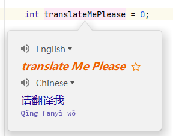
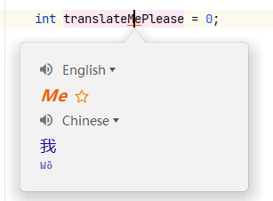
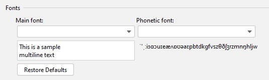

Restart the IDE after installation.
Select text or hover the mouse over the text > Right-click > Translate
Or use shortcuts for translation, as detailed in Actions.
Translate the target text and replace it. If the target language is English, the output has several formats: in camel case, with a word separator (when the output contains multiple words, the separator can be configured in the plugin configuration page: Translation Settings > Separator) and in the original format.
Instructions: Select text or hover the mouse over the text > Right-click > Translate and replace... (Or use shortcuts for translation, as detailed in Actions).
Preferences (Settings) > Tools > Translation > Other > Translate documents: When you check this option, the document will be automatically translated when you view it.
Click the translation engine icon in the status bar or use the shortcut Ctrl + Shift + S (Mac OS: Control + Meta + Y) to quickly switch between translation engines.
Open the translation dialog, which appears by default on the toolbar. Default shortcut:
Extract words and translate them. If you have already selected a text, extract the words from the portion of the text you'd like translate. Otherwise, words are extracted automatically from the maximum range (this extraction can be configured in Settings). This action is displayed by default in the editor's right-click context menu. Default shortcut:
Extract words and translate them. Automatically extract and translate all words from a specific range, ignoring manually selected text. Default shortcut: (None)
Extract words and translate them. Automatically extract the nearest single word, ignoring manually selected text. Default shortcut: (None)
Translate and replace. The word extraction method works the same as when translating. Default shortcut:
Translate the contents of document comments. This option is displayed by default in the editor's context menu (right-click to access) and is available when the cursor is in the document's comment block. Default shortcut: (None)
Toggle between the original and translated texts in Quick Documentation. This option is available when the focus is on the Quick Documentation pop-up window or the documentation tool window. Default shortcut (same as translation shortcut):
Translate selected text in some text components (e.g. Quick Docs, popup hints, input boxes……). This does not support automatic word extraction. Default shortcut:
Quickly toggle between translation engines. Default shortcut:
Display the 'Word of the Day' dialog box. Default shortcut: (None)
Translation dialog shortcuts:
Translation balloon shortcuts:
Quick Documentation window shortcuts：
A:
A： Garbled code generally appears when there are a lack of corresponding characters in the font. You can go to the Settings page of the plugin to modify the font in order to fix the garbled code (as shown below).
A: You can try changing the way passwords are saved to In KeePass (Settings > Appearance & Behavior > System Settings > Passwords). For more details：
A: The shortcut keys are most likely not working because they are being used in other plugins or external applications. You can reset shortcut keys for the corresponding operations.
A： If you find any problems with the plugin, or have any comments or suggestions about the plugin, you can click here to give feedback. Please read the Issue Management Announcements before giving feedback on an issue. If you have any questions, you can also ask here.